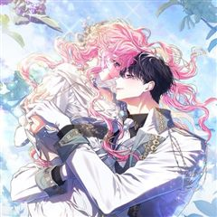
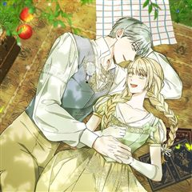
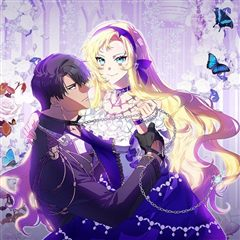
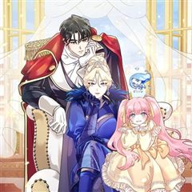

악역의 엔딩은 죽음뿐 같은 웹툰 추천

악역의 엔딩은 죽음뿐 · 수월 / 권겨을
악역의 엔딩은 죽음뿐 재밌게 봤다면 이 웹툰들도 좋아할 거예요. 같은 장르이면서 서스펜스, 자극적인, 빙의 같은 요소가 겹치는 작품을, 겹치는 요소가 많은 순서로 20개 골랐어요.
2026-10-09 기준 · 네이버웹툰·카카오웹툰·레진코믹스 · 성인 작품 제외
내 취향으로 직접 골라 추천받기 →-
1
 카카오웹툰
카카오웹툰남주를 죽여보겠습니다
로판 소설을 읽고 몸이 아파오던 나 권진하. 여주인공 엘비가 느끼는 감정과 감각이 모두 연결되어버렸다. 끔찍한 통증과 슬픔에 병원까지 찾아갔지만 몸에는 이상무. 결국 소설 작가에게 메일을 보냈다. 제발 쓰레기 남주가 여주 좀 그만 괴롭히게. 하지만…
서스펜스자극적인빙의로판로맨스카카오웹툰에서 보기 → -
2
 네이버웹툰
네이버웹툰악녀의 시집살이는 즐겁다
사랑 하나만 믿고 시댁살이를 견딘 ‘에시카’. 그러나 남편은 자신의 친구와 부정을 저지르고, 큰 사고까지 당하는 과정에서 전생의 기억을 떠올린다. 그녀는 바로 악녀 ‘천영령’이었고, 이곳은 책속 세상이었다는 것. 자신의 전생과 자신을 괴롭힌 사람들과…
서스펜스자극적인빙의로판로맨스네이버웹툰에서 보기 → -
3
 카카오웹툰
카카오웹툰S급 헌터는 악역 공녀가 되기 싫습니다
김이영, 그녀는 대한민국의 평범한 공무원 시험 응시생이었다. 그것도 4년 반이 넘는 긴 시간동안 공부 끝에 합격한, 낙이라고는 짬짬이 소설읽는 것밖에 없는 정말 평범한 사람. 그러나 합격을 축하하기 위해 외식을 나간 날 교통사고를 당해 죽고, 자신이…
서스펜스빙의로판로맨스카카오웹툰에서 보기 → -
4
 카카오웹툰
카카오웹툰악마의 주인님이 되어버렸다
피폐소설 속 남주를 흑화하게 만든 악녀로 빙의했다. 이미 N번의 빙의를 말아먹었던 나는 결심했다. 지하실에 갇힌 남주를 구하고 탈출하겠다고. “내가 지켜줄게." 드디어 남주의 정체가 밝혀지고 해피엔딩이 눈앞이었다. 학대는 무슨, 손수 먹이고 입혀 가…
서스펜스빙의로판로맨스카카오웹툰에서 보기 → -
5

카카오웹툰망겜 속에 갇혔다
평소와 다를 바 없이 평범한 일상을 보내는 도버 마을 약재상 【샤리 아즈라엘】 그러던 어느 날, 자신이 사실 망겜 속 NPC에 빙의되어 2년 동안 게임에 갇혀 있었다는 사실을 불현듯 깨닫고 만다. 만약 게임에서 나가지 못한다면 "VR 게임을 하던 2…
서스펜스빙의로판로맨스카카오웹툰에서 보기 → -
6
 네이버웹툰
네이버웹툰남편은 한 명으로 족하다
<모든 사람들이 나를 사랑하면 사는 게 재밌을 줄 알았다> 평범한 회사원이 로맨스 판타지 게임의 매력 수치 999 백작 영애 '크로체타'에 빙의했다. 사람들이 눈만 마주치면 자신에게 반해서 달려드는 환장할 상황. 크로체타는 '남자 주인공'을 공략하여…
자극적인빙의로판로맨스네이버웹툰에서 보기 → -
7카카오웹툰
악녀가 될 수밖에 없는 이유
희대의 미친년으로 불리는 악역으로 환생한 나. 하지만 나는 환호했다. 왜냐하면 악녀 르네 블레어는 돈이 많았으니까! 비록 작품 초반에 죽지만 아무렴 어때, 나쁜 짓은 그만두고, 앞으로 모두에게 잘하는 거야. 혹시 알아? 갑자기 돌변하면 흔한 악녀 빙…
서스펜스빙의로판로맨스카카오웹툰에서 보기 → -
8
 네이버웹툰
네이버웹툰두 번 빼앗긴 남편
피폐 소설 속 주인공 '로제'로 빙의했다, 그것도 내 남편을 빼앗은 절친과 함께. 그리고 변함없이 또 남편을 빼앗으려고 하는데. "마음껏 탐해 주렴. 이제 과거처럼 당하고만 있진 않을 테니까." 피폐 소설 남주를 절친에게 버리고 도망치려 한다.
자극적인빙의로판로맨스네이버웹툰에서 보기 → -
9

카카오웹툰파혼한 영애는 엔딩 외엔 집착하지 않는다
게임 속으로 들어온 지 3년. 엔딩을 맞지 못해 리셋되고 말았다. 그런데 하필 돌아온 시점이 망할 남주 중 한 명에게 파혼당하는 순간이 뭐람…! 구질구질하게 매달릴 생각, 정말 없다고! “더는 실패하지 않아.” 주변에 휘둘리던 한심했던 모습을 벗어…
자극적인빙의로판로맨스카카오웹툰에서 보기 → -
10
 카카오웹툰
카카오웹툰죽어 줘, 라는 말을 들었다
죽어 줘, 라는 말을 들었다. 10년을 함께한 동료들로부터. “미안하다, 린. 세계를 위해 네가 대신 죽어다오.” 그렇게, 모든 것이 끝났다고 느꼈을 때. ‘...응?’ 린은 다시 눈을 떴다. 무려 30년이나 지나, 신의 사도라 불리는 투슬레나 대가…
자극적인빙의로판로맨스카카오웹툰에서 보기 → -
11

카카오웹툰악역을 위한 메르헨
동화 ‘인어공주’ 속 왕자와 결혼하는 이웃 나라 공주, 이자벨에 빙의했다. 그런데 단순한 조연인 줄 알았던 공주가 대륙에 소문이 자자한 악녀란다. 게다가 죽을 날을 받아둔 시한부인 것도 모자라 계속 살아난다. ‘사람 가지고 장난해? 아무리 신이 있다…
서스펜스빙의로판로맨스카카오웹툰에서 보기 → -
12
 카카오웹툰
카카오웹툰K-장녀가 육아물에 빙의하면
이 세계가 전생에 내가 읽었던 바로 그 소설 속이라는 걸 깨달았다. 원작에서는 내 위치의 인물이 북부 공작가의 ‘장남’이자 당당한 후계자였는데, 웬일인지 지금의 나는 ‘장녀’로 살아가고 있다. 심지어 부모님은 나보다 내 남동생만 감싸고, 후계자 자리…
자극적인빙의로판로맨스카카오웹툰에서 보기 → -
13

카카오웹툰망작의 2부를 시작합니다
오류 투성이인 망작 소설에 빙의해 버렸다! 집으로 돌아가려는 일념 하나로, 마왕의 손에서 세계를 구하고 죽음을 맞이했는데… 이 저주받은 망작, 2부가 있었다. 다행히 2부는 육아물! 원작의 성녀만 잘 키우면 되는 줄 알았는데, 1부와 세계관이 같아…
자극적인빙의로판로맨스카카오웹툰에서 보기 → -
14
 레진코믹스
레진코믹스복수는 모르겠고, 조련 중입니다
[휴재 중] [4주 연재 후 1주 휴재] 세르티엔의 마지막 공주, 엘로이즈. 그녀는 신력을 탐한 황태자의 노리개가 되어 천천히 망가져갔다. \\
자극적인빙의로판로맨스레진코믹스에서 보기 → -
15
 카카오웹툰
카카오웹툰누군가 내 몸에 빙의했다
본 작품은 가상의 세계관 및 허구의 인물을 다루고 있습니다. 또한 가상의 세계이므로 현대 한국과 풍습/시대상이 다르니 감상에 참고 부탁드립니다. *작품 내 등장하는 한의학 지식은 소설에 맞추어 재구성, 각색되었습니다* -----------------…
서스펜스로판로맨스카카오웹툰에서 보기 → · 누군가 내 몸에 빙의했다 같은 웹툰 → -
16
 카카오웹툰
카카오웹툰악당만 취급합니다
‘내 직업은 치료사가 아니란 말이다!’ 2년 전. 집 앞에 쓰러진 환자를 치료하고 나서부터 환자들이 줄줄이 쌓인다. 불법 보석 세공사이자 보석술사인 시링크스는 이번에도 자신의 문 앞에 널브러진 환자를 확인하는데... 이 남자는... 소설 속 최고의…
서스펜스로판로맨스카카오웹툰에서 보기 → -
17
 카카오웹툰
카카오웹툰남편의 말대로 정부를 들였다
' “기억하지 루이제? 내 사생활에 참견하는 순간 이 결혼은 끝이야. 그걸 받아들인 건 당신이고.” 결혼 기간 약 3년. 끊이지 않고 바람을 피우는 남편에게 지친 어느 날, 남편이 정부를 들이라고 했다. 그의 말대로 정부를 구해보려고 뒷골목에서 가장…
서스펜스로판로맨스카카오웹툰에서 보기 → -
18
 카카오웹툰
카카오웹툰집 잘못 찾아오셨어요, 악역님
아무래도 나는 이웃집의 사연 많은 엑스트라인 모양이다. 원작의 전개대로라면 이제 여주인공이 치명상을 입고 쓰러진 악역을 구해주고 그 대가로 미남 악역의 광적인 집착을 받아야 했다. 그런데 어째서인지 악역 서브남이 내 집 앞에 기절해 있는 것이 아닌가…
서스펜스로판로맨스카카오웹툰에서 보기 → -
19
 카카오웹툰
카카오웹툰내가 버린 개에게 물렸을 때
윈터 공작가에선 개를 기른다. 주인에게 늘 순종하는 검은 개를.. 윈터가의 공녀, 이블린 윈터. 자신만을 따르던 개, 길라스 블랙을 잔인하게 내쫓는다. “저를 사랑하신다고 하시지 않았습니까.” “사랑? 그 말을 믿었어? 버러지 같은 게 주제도 모르고…
자극적인로판로맨스카카오웹툰에서 보기 → · 내가 버린 개에게 물렸을 때 같은 웹툰 → -
20
 카카오웹툰
카카오웹툰제국의 시녀
'흔해 빠진 외모, 자작가의 사생아.' 내세울 만한 배경은 없지만 비상한 머리 덕에 시녀의 신분으로 권세를 손에 쥔 레오나. 하지만 영원불멸할 줄 알았던 제국이 적의 침공에 무너진 순간, 그녀 역시 적병의 칼에 죽음을 맞이한다. 욕심 때문에 남을 해…
서스펜스로판로맨스카카오웹툰에서 보기 →